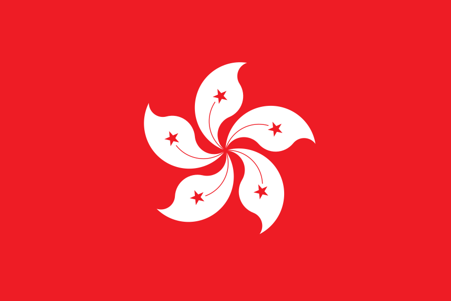
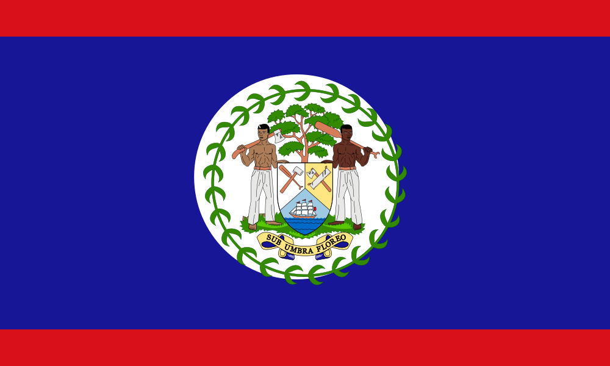
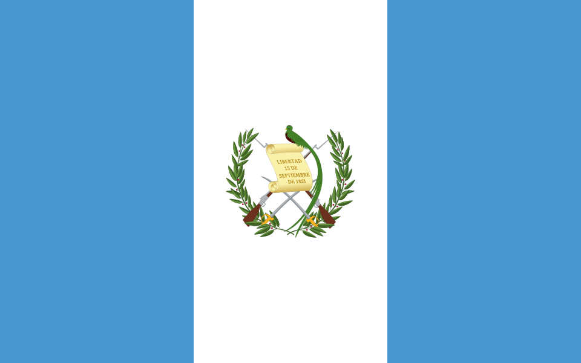
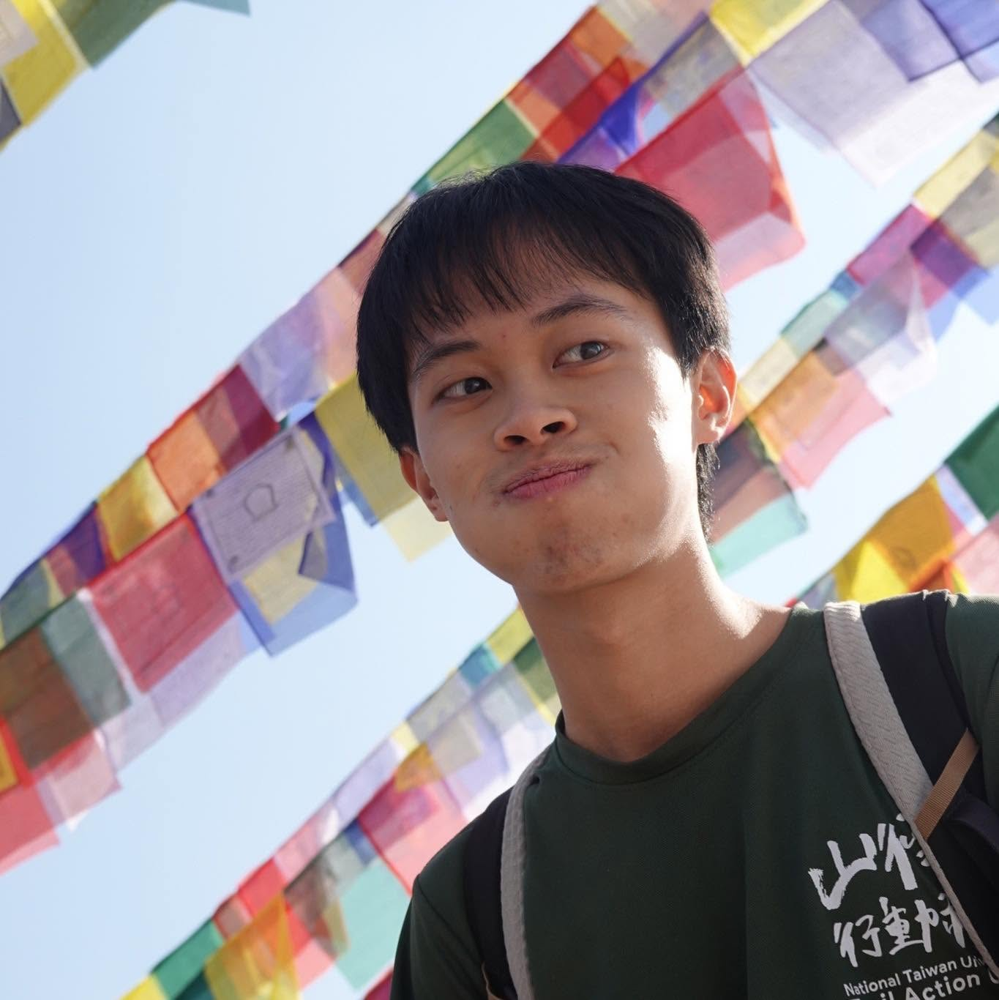

Geography · National Taiwan University
Jen-Fu Huang
Geography student · President of NTU Climate Action Club · Traveler & writer
I am a senior (4th year) in the Department of Geography at National Taiwan University, with a minor in Forestry. I lead the NTU Climate Action Club and take part in environmental research, from fisheries-waste governance at fishing ports in eastern Taiwan to spatial ecology.







- Email: huangfrank501@gmail.com

Resume
Education
| Major | Department of Geography, National Taiwan University (senior, 4th year) |
|---|---|
| Minor | Forestry |
| Programs | Biodiversity program; Marine Science program |
| Standing | GPA 4.12, ranked 2/52 |
| Honors | Dean's List three times (2024 fall, 2025 fall, 2026 spring) |
Research
- Research project · 2026 NSTC Undergraduate Research Project Governance of temporary storage sites for fisheries waste at fishing ports in eastern Taiwan.
- Research project Biodiversa+ SKETCH Participant.
- Research assistant Department of Geography, "Geo-corner"
- Research assistant IPCS Spatial Ecology Lab
Leadership & experience
Scroll or drag sideways to see more →
-
2026–27
President, NTU Climate Action Club
Previously Activities Director.Club programs
- Climate Professional Series (氣候職人誌)
- Cups Log Out Program (杯杯登出計畫, Campus Circular Cup Initiative)
- Beach cleanups
- Sustainability-night talks
- Sustainable-eating community
- Collaboration with the University of Hong Kong and Muffles' College (Belize), 陽明交通大學(NYCU), 東華大學(NTHU)
-
2026
MOFA Taiwanese Path Finder Flagship Program, "環保行動家"
One-month internship at Orange Walk Town Council, Belize: environmental education, solid-waste management, and cultural exchange - 2026 fall Student Representative, College of Science
-
2025
Ocean Affairs Council Indonesia Marine-Debris Youth Delegation
Youth representative; Think Bank exchanges in Jakarta. -
2024-2025
NTU Trail Action Club: vice president and teaching assistant
Geography Student Association: academic director
Awards
| Year | Award |
|---|---|
| 2026 | S&G Contest, first prize |
| 2025 | TSMC Biodiversity Scholarship (representing NTU Trail Action Club), NT$80,000 |
| 2024–2026 | Dean's List (three times) |